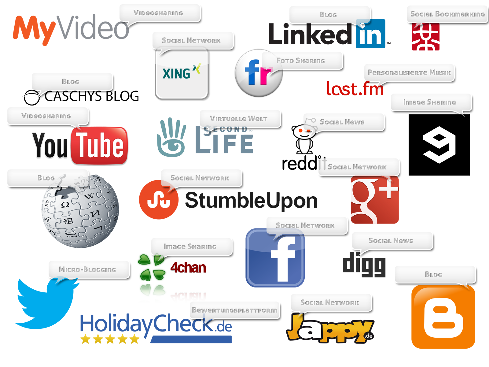
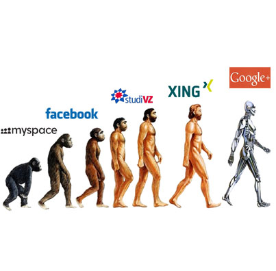

Social Meda
Gefahren für Nutzer und Nicht-Nutzer
Dominic Rönicke | Erik Steinhagen | Felix Steinhagen | Stefan Doebe
Made with reveal.js
Gliederung
- Was ist Social Media?
- Welche Arten existieren?
- Wie sieht der Datenschutz aus?
- Wo liegen die Gefahren?
- Für Nutzer
- Für Nicht-Nutzer
- Wie sieht die Zukunft aus?
1. Was ist Social Media?

- Sind Digitale Medien und Technologien
- Ermöglicht Generierung und Austausch von medialen Inhalten; einzeln oder durch eine Gemeinschaft

2. Welche Arten existieren?

Klick!
3. Wie sieht der Datenschutz aus?
Am Beispiel FacebookWelche Daten sammelt Facebook?
Wann sammelt Facebook Daten?
- Verwendung einer Applikation von Facebook
- Aufruf einer Webseite mit einem Facebook Plugin (z.B. Like-Button)
- Besuch eines anderen Profils
Wozu verwendet Facebook die Daten?
- Verbesserung der Nutzererfahrung auf Facebook
- Schaltung von personalisierter Werbung
- Vorschlagen von Freunden
- Ermittlung des aktuellen Wohnortes
- Anzeige von "Events" in der Umgebung
- Weitergabe an Dritte (bei Einwilligung)
Was passiert bei Löschung des Kontos?
- Dauert etwa einen Monat
- Überreste bleiben bis zu 90 Tage in Protokollen, Backups etc.
- Gepostete Nachrichten in Gruppen und gesendete persönliche Nachrichten werden nicht gelöscht
4. Wo liegen die Gefahren?
Für Nutzer- Preisgabe von ungewollten persönlichen Daten im Netz
- Durch Klarnamenzwang und Indizierung von Suchmaschinen kann man leicht gefunden werden
- Psychische Abhängigkeit
- Glaube falscher Anonymität
- Durchleuchtung durch Dritte (Arbeitgeber)
- Man wird selbst zum Produkt
4. Wo liegen die Gefahren?
Für Nicht-Nutzer- Ausgrenzung vom sozialen Leben
- Daten werden trotzdem gesammelt (IPs. Browserdaten etc.)
5. Wie sieht die Zukunft aus?
- Großer Einfluss in der Wirtschaft
- Neuer Berufsgruppen z.B. Social Media Manager
- Social Media im kompletten Alltag (Kühlschrank Twittert was ich gerade gegessen habe)
- Noch stärkerer Fokus auf mobile Dienste
- Engere Verknüpfung zu Webseiten Inhalt
Quellen
- http://de.wikipedia.org/wiki/Social_Media
- http://www.weknowwhatyouredoing.com/
- http://wifimaku.jimdo.com/9-social-media-marketing/9-2-was-sind-social-media/9-2-2-arten-von-social-media/
- https://www.facebook.com/about/privacy/
- http://nikbender.com/zukunft-von-social-media/
- http://www.youtube.com/user/vrtehlers
Download: https://github.com/4rg0n/social-media-pres